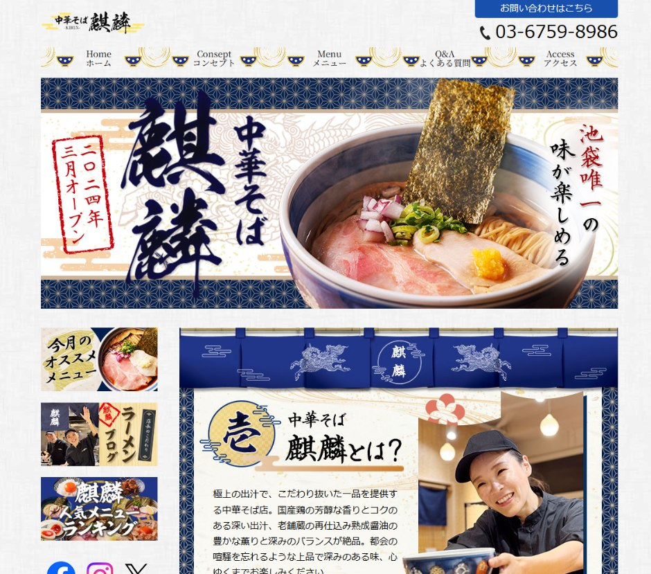
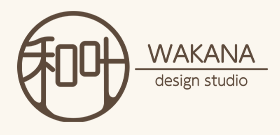
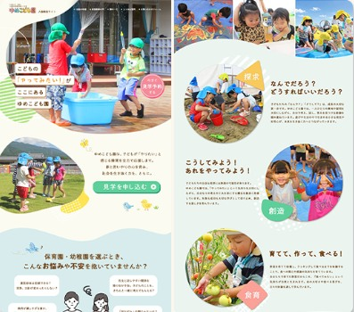
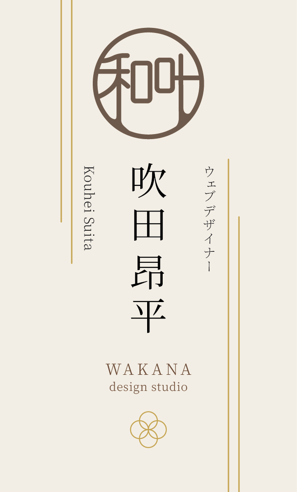
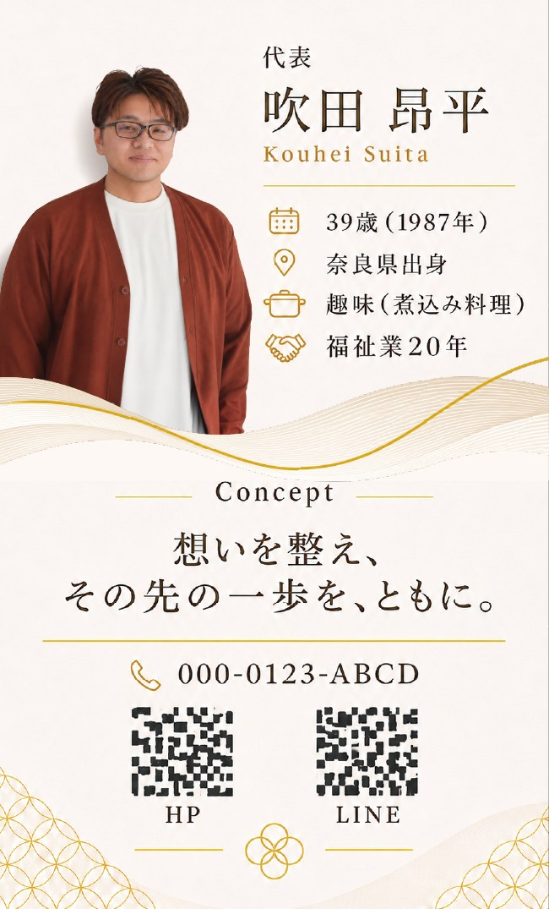

HPデザイン
想いを、伝わる形へ
ホームページは、ただ作るだけのものではありません。その人や企業が大切にしている想いや価値観、届けたい相手を整理し、「何のために伝えるのか」という目的から構成を設計します。見た目の美しさだけでなく、情報の伝わる順序や導線まで考え、想いが必要な人へ届くWebデザインへ整えます。
【制作実績】
中華そば 麒麟

大切なことは
伝える“手段”ではなく
伝える“目的”
ホームページ、SNS、LINE、Web広告。
伝えるための手段は、以前よりずっと増えました。
けれど、手段が増えたからこそ「何を使うか」に意識が
向き、本来の目的を見失ってしまうこともあります。
大切なのは、まず「誰に、何を、なぜ伝えたいのか」を
整理すること。
和叶は、その目的から一緒に考えます。
まずは現状を整え
“目的”を見つけましょう
ホームページを作る、SNSを始める、LINEを導入する。
どれも大切なのは、「やること」から決めないことです。
まずは今の状況や抱えている課題を整理し、本当に必要
な目的を見つける。
そのうえで、HP・LP・SNS・LINEなど、今のあなたに
合った最適解を共に導き出し、形にしていきます。
《和叶》のできること

想いを、伝わる形へ
ホームページは、ただ作るだけのものではありません。その人や企業が大切にしている想いや価値観、届けたい相手を整理し、「何のために伝えるのか」という目的から構成を設計します。見た目の美しさだけでなく、情報の伝わる順序や導線まで考え、想いが必要な人へ届くWebデザインへ整えます。
【制作実績】
中華そば 麒麟

相手の「捉え方」から、届く流れをつくる。
「こんなお悩みありませんか？」という課題提起を起点に、届けたい相手が何を感じ、どのように内容を捉え、次の行動へ進むのかを考えて構成を設計します。デザインの完成をゴールにするのではなく、公開後の反応を見ながら改善を重ね、LPそのものを育てていくための継続的なサポートまで行います。
【制作実績】
社会福祉法人 愛誠会
ゆめこども園 様


手に取る一枚に、想いと人柄を。
名刺やチラシなど、手に取って伝わるものにも、その人らしさを。言葉や色、余白、情報の並びを整え、想いが自然に届く形を考えます。和叶の自社名刺では、表面に屋号と名前を、裏面に人柄や大切にしている考え方を添えました。出会いから、その先のつながりへ。会話のきっかけになる一枚を目指しています。
【制作実績】
和叶｜自社名刺デザイン
WAKANA Design Studioは、
〈和叶-Wakana Life Design-〉が目指す世界を実現するための「仕事」領域を担う事業です。
和叶が大切にしているのは、
一人ひとりが自分の想いや価値観を大切にしながら、
自分らしく、ありのままに生きられること。
そのためにWAKANA Design Studioでは、
事業や活動の中にある想い、価値観、届けたい世界を整理し、
Web・SNS・デザインを通して、必要な人へ伝わる形へ整えます。
デザインそのものを目的にするのではなく、
その先で、その人や事業が自分らしく活動を続けられること。
それが、WAKANA Design Studioが目指していることです。
あなたの大切にしている想いを、あなたらしく届く形へ。
まだ言葉になっていなくても大丈夫です。
あなたの「想い」や「価値観」を一緒に整理し、
必要な人へきちんと伝わる環境へ落とし込む
お手伝いをいたします。